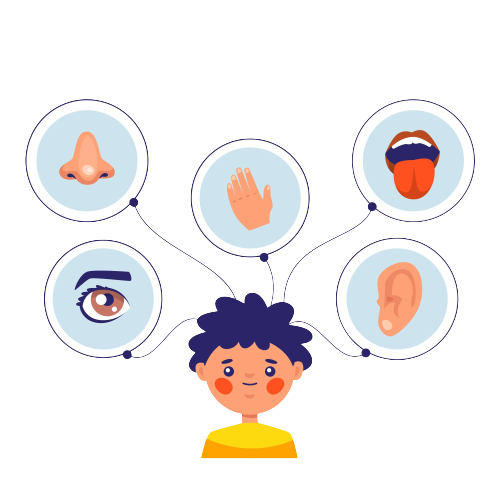
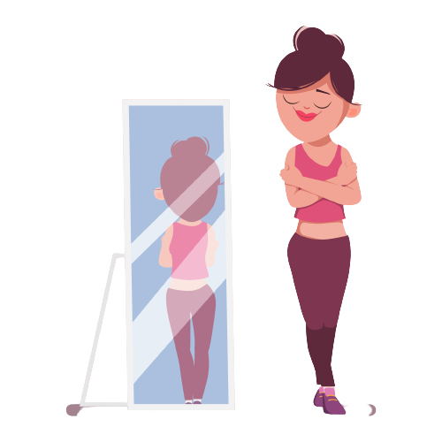
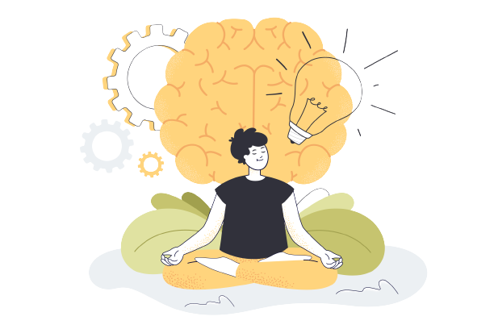
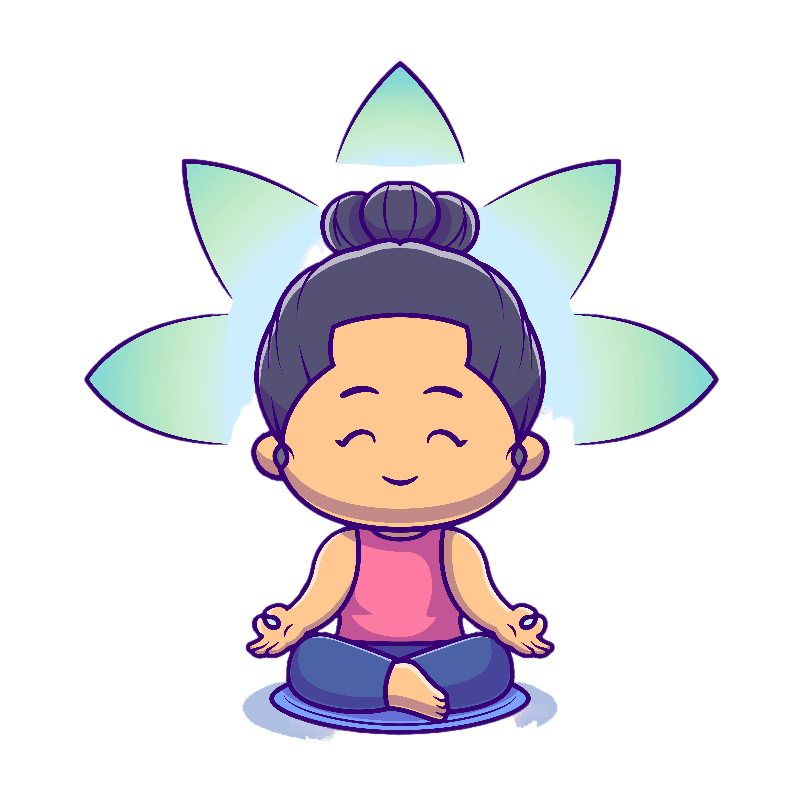
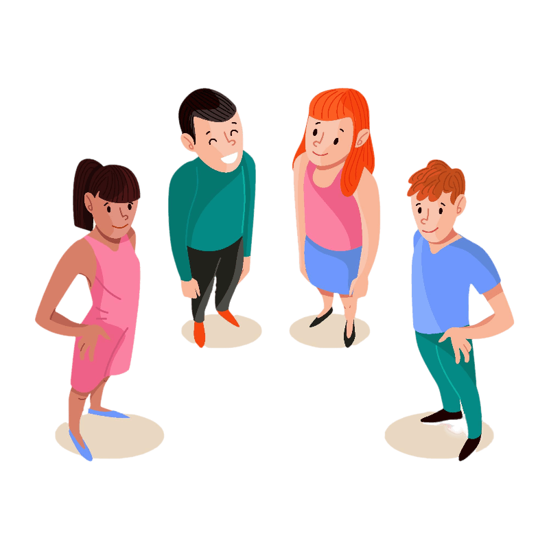

To begin, find a comfortable meditation position. Either sitting on a cushion on the floor, or in a chair. Allow your
spine to be straight and long, and let your shoulders drop, relaxed. Rest your hands in your lap, and gently close your eyes.
Become aware of the rhythm of your breathing. There’s no need to change your breathing in any way, simply notice
it exactly as it is.
The Wheel of Awareness Exercise
Now, bring to mind the image of a wheel. This wheel has a center, known as the “hub”, and four sections, or quadrants, surrounding this hub. There is a rim that encompasses everything - the four quadrants and the hub. For each part of this practice, you will zoom in on one portion of the wheel, and become aware of its contents with my guidance.
Turn your attention to the top, left quadrant, which houses your five senses. Zoom in on this area of your wheel by engaging your sense of hearing… what can you hear? And now your sense of touch… what can you feel? And now your sense of smell, and taste… what can you notice? Now gently open your eyes for a moment… what can you see?
Take a deep slow breath here.Turn your attention to the top, right quadrant, which houses your “sixth sense”, which is the inner sensations of your own body. Take a few moments to scan through your body from head to toe, becoming aware of any and all physical sensations throughout. Tingling, heat, tension, numbness. Take your time to move through each body group. Just noticing, being curious, just observing
Turn your attention to the bottom, left quadrant, which houses the activities of your mind itself, including your emotions, thoughts, memories, hopes, beliefs, dreams, attitudes, and intentions. First, simply become aware of everything that is entering your mind at this moment. Welcoming this mental activity into your awareness. What thoughts and feelings are showing up right now?. Next, begin to examine how these internal experiences arise and pass… Do they come up suddenly or gradually? Do they stay constant, or fade in and out? Are there gaps between the different mental activities, or do these exist as one long stream of consciousness?
Good, let’s take another nice deep breath here.Turn your attention to the center of the wheel, the hub, which is where your awareness stems from. The hub is the ‘you’ that has noticed everything so far in this practice - the part of you that is observing, listening, looking, focusing, sensing. Take some time here, as cultivating this “awareness of awareness” takes practice
Good, let’s take another deep, slow breath here. And then turn your attention to the bottom, right quadrant of your wheel, which houses your sense of connection to the outside world. First, notice the sense of connection to the people physically closest to you right now [15-second pause]. Then, expand this sense of connection to people further away [15-second pause]. And then tap into your sense of connection to your loved ones, wherever they may be right now [15-second pause]. Then, widen your sense of connection step-by-step to include those who live in your neighborhood, city, country, continent, in the whole world, and finally to all living beings on earth.
As the meditation comes to an end, simply bring your attention back to your breath, as you did at the beginning of the practice. You might like to take a few deep, slow breaths here, to ground yourself back into this moment. Then, when you are ready, gently open the eyes.